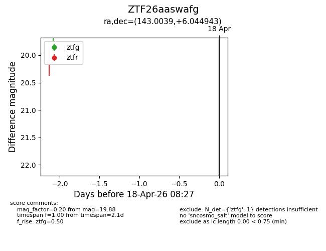
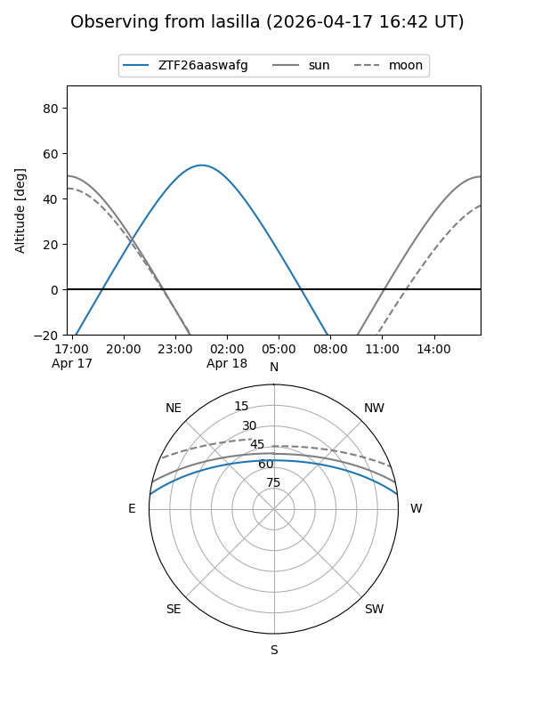
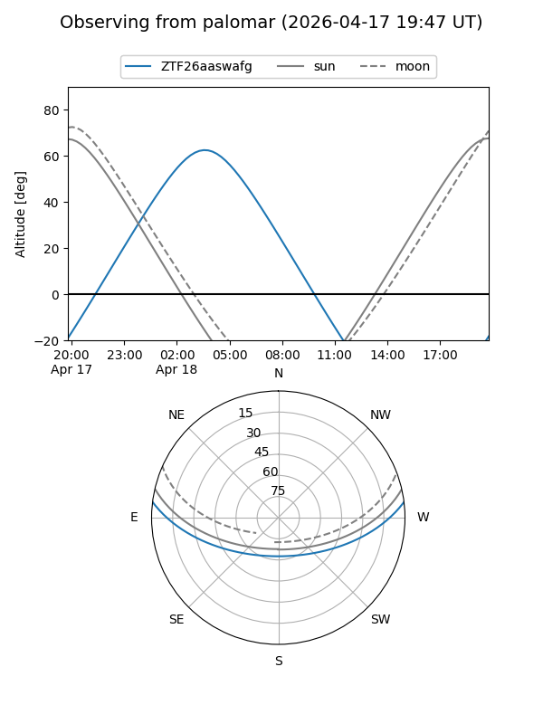

ZTF26aaswafg
Target ZTF26aaswafg at 2026-04-18 08:33
Aliases and brokers:
FINK: link
Lasair: link
ALeRCE: link
alt names
ZTF26aaswafg (ztf,fink_ztf)
Coordinates:
equatorial (ra, dec) = 143.0039,+6.04494
equatorial (HMS+DMS) = 09:32:00.93,+06:02:41.80
galactic (l, b) = (227.5751,+38.21528)
Flags:
Photometry:
last ztfg=19.88
1 ztfg detections
Lightcurve

Visibility


Additional plots